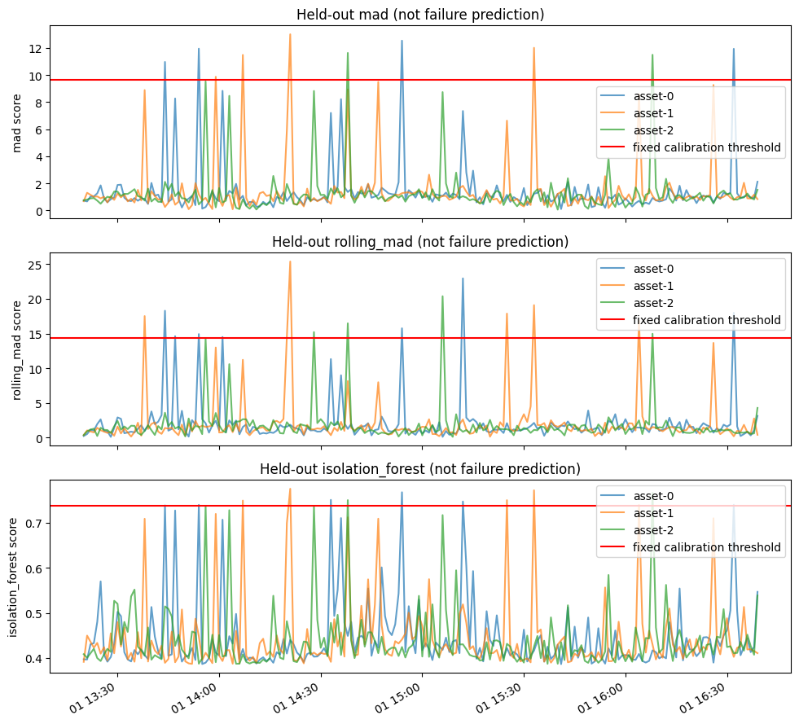

Local operational anomaly detection. Experimental synthetic evaluation, not failure diagnosis.
This static showcase does not run Python or live inference. Run the local Gradio demo to analyze CSV files.
Measured synthetic results · Held-out chart

Examples generated by scripts/evaluate.py. No real industrial validation has been performed.